4-2-3 インストルメントパネル
構成図
|
1 |
BASE SUB-ASSY, RR SEAT CUSHION (G2201-A1000) |
2 |
GARNISH SUB-ASSY, RR SEAT UNDER, NO.1 (G2801-A1000) |
|
3 |
GARNISH SUB-ASSY, RR SEAT UNDER, NO.2 (G2802-A1000) |
4 |
POCKET SUB-ASSY, QUARTER TRIM, LH (F2504-A1000) |
|
5 |
TRIM SUB-ASSY, QUARTER, LH (F2502-A1000) |
6 |
BASE SUB-ASSY, RR SEAT BACK (G2301-A1000) |
|
7 |
GARNISH, BACK TRIM, UPR (F4211-A1000-A) |
- |
- |
|
1 |
TRIM SUB-ASSY, QUARTER, RH (F2501-A1000) |
2 |
ORNAMENT SUB-ASSY, SIDE TRIM, RH (F7705-A1000) |
|
3 |
COVER, SIDE CONSORE HOLE, RH (E8861-A1000)取り外し |
4 |
BOX SUB-ASSY, SIDE CONSOLE, RH (E8801-A1000-B) |
|
5 |
GARNISH SUB-ASSY, FR PILLAR, NO.2 LH (F2204-A1000) |
6 |
BOARD SUB-ASSY, SIDE TRIM, UPR RH (F7701-A1000) |
|
7 |
BOARD SUB-ASSY, SIDE TRIM, LWR RH (F7703-A1000) |
8 |
PANEL, SIDE CONSOLE, UPR (E8851-A1000) |
|
9 |
TRAY SUB-ASSY, SIDE CONSOLE, LWR (E8804-A1000) |
- |
- |
|
1 |
PANEL SUB-ASSY, INSTRUMENT CLUSTER (E5305-A1000) |
2 |
COVER, INSTRUMENT PANEL HOLE (E5621-A1000) |
|
3 |
PANEL SUB-ASSY, INSTRUMENT, LWR (E5601-A1000) |
4 |
PANEL, INSTRUMENT CLUSTER UPR, NO.2 (E5371-A1000) |
|
5 |
GARNISH SUB-ASSY, FR PILLAR, NO.1 RH (F2201-A1000) |
6 |
GARNISH SUB-ASSY, FR PILLAR, NO.2 RH (F2203-A1000) |
|
7 |
GARNISH SUB-ASSY, FR PILLAR, NO.1 LH (F2202-A1000) |
8 |
GARNISH SUB-ASSY, FR PILLAR, NO.2 LH (F2204-A1000) |
|
9 |
PANEL SUB-ASSY, INST CLUSTER UPR, No.1 (E5306-A1000) |
10 |
PANEL SUB-ASSY, INSTRUMENT, UPR (E5401-A1000) |
|
11 |
PANEL SUB-ASSY, INSTRUMENT UPR, RH (E5403-A1000) |
12 |
PANEL SUB-ASSY, INSTRUMENT UPR, LH (E5404-A1000) |
取り外し前作業
-
ホーンボタンASSY取り外し10-X ホーンボタン
-
ステアリングホイール取り外し9-1 ステアリングホイール
-
シートASSY取り外し4-2_1 シート
取り外し手順
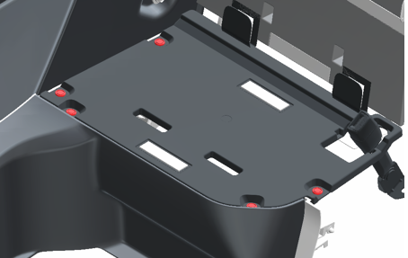
1.BASE SUB-ASSY, RR SEAT CUSHION取り外し
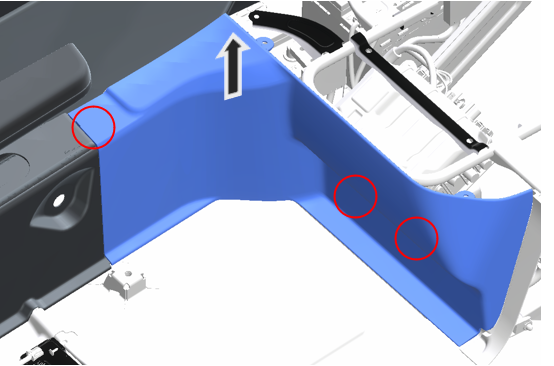
2.GARNISH SUB-ASSY, RR SEAT UNDER, NO.1取り外し
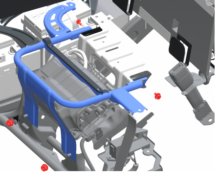
3.FRAME ASSY, RR SEAT CUSHION取り外し
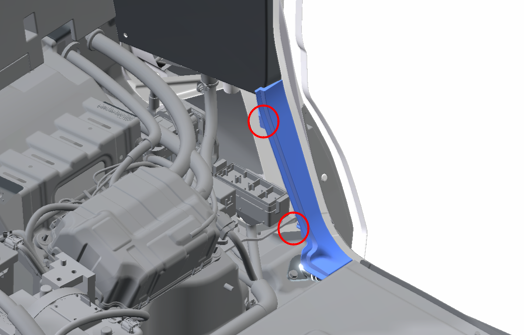
4.GARNISH SUB-ASSY, RR SEAT UNDER, NO.2取り外し
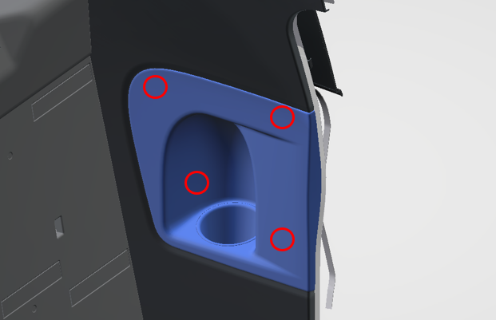
5.POCKET SUB-ASSY, QUARTER TRIM, LH取り外し
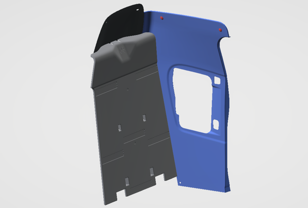
6.TRIM SUB-ASSY, QUARTER, LH取り外し
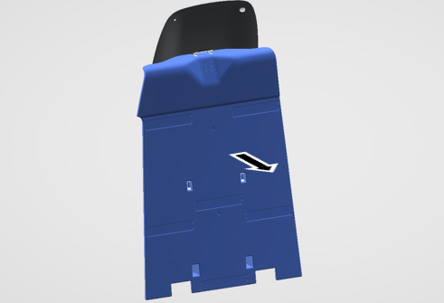
7.BASE SUB-ASSY, RR SEAT BACK取り外し
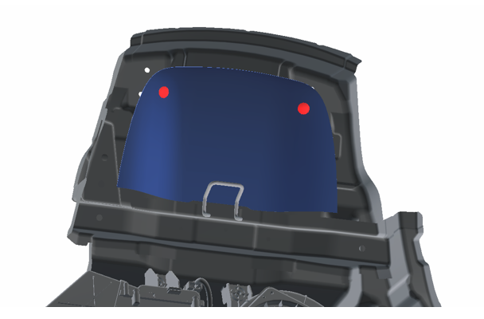
8.GARNISH, BACK TRIM, UPR取り外し
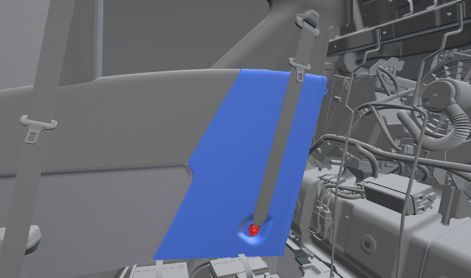
9.TRIM SUB-ASSY, QUARTER, RH取り外し
-
リヤシートベルトを切り離す。
-
TRIM SUB-ASSY, QUARTER, RHを取り外す。
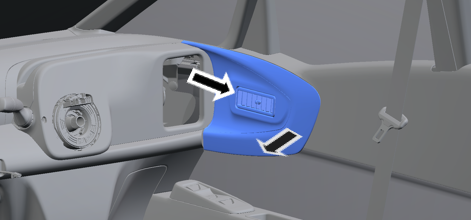
10.ORNAMENT SUB-ASSY, SIDE TRIM, RH取り外し

11.PAD ASSY, STEERING WHEEL取り外し
-
ボルト２本を緩めてPAD ASSY, STEERING WHEELを取り外す。
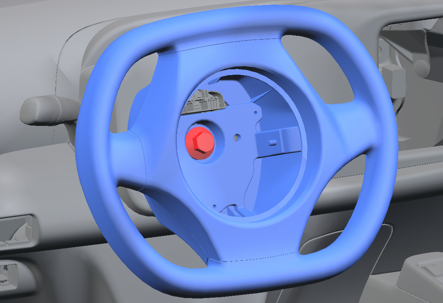
12.WHEEL ASSY, STEERING取り外し
-
ボルトを取り外す。
-
合いマークをつける。
-
プーラーを使用してWHEEL ASSY, STEERINGを取り外す。
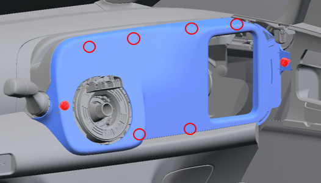
13.PANEL SUB-ASSY, INSTRUMENT CLUSTER取り外し
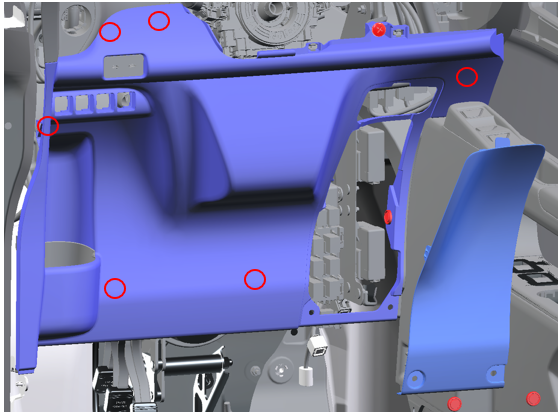
14.PANEL SUB-ASSY, INSTRUMENT, LWR取り外し
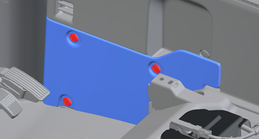
15.COVER, SIDE CONSORE HOLE, RH取り外し

16.PANEL, SIDE CONSOLE, UPR取り外し
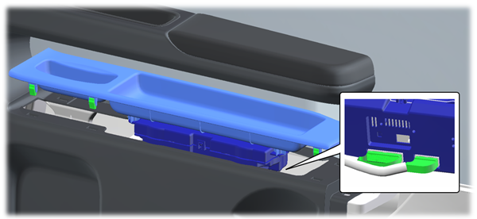
17.TRAY SUB-ASSY, SIDE CONSOLE, LWR取り外し
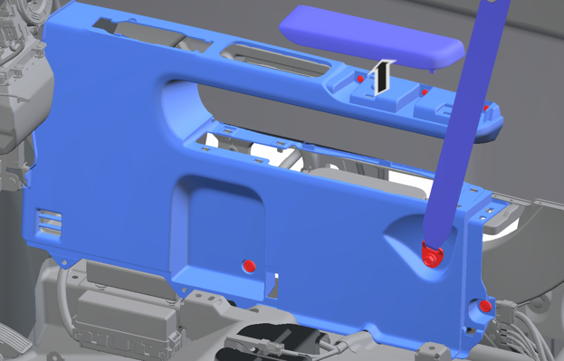
18.BOX SUB-ASSY, SIDE CONSOLE, RH取り外し
-
シートベルトのボルト取り外し
-
ARMREST, SIDE CONSOLE, UPRを取り外す。
-
クリップ３つ、スクリュー３つを取り外す。
-
BOX SUB-ASSY, SIDE CONSOLE, RHを取り外す。
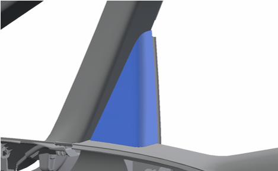
19.GARNISH SUB-ASSY, FR PILLAR, NO.2 LH取り外し
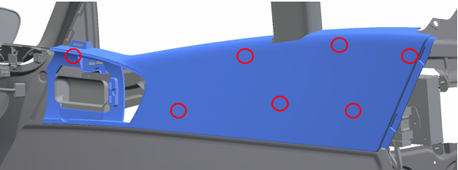
20.BOARD SUB-ASSY, SIDE TRIM, UPR RH取り外し
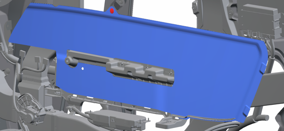
21.BOARD SUB-ASSY, SIDE TRIM, LWR RH取り外し
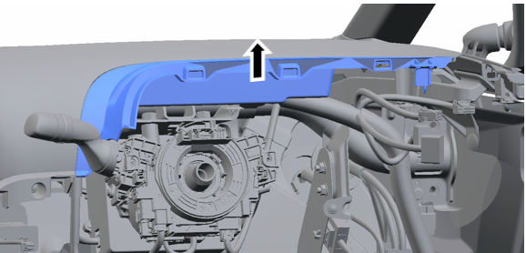
22.PANEL, INSTRUMENT CLUSTER UPR, NO.2取り外し
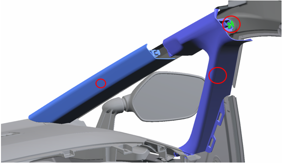
23.GARNISH SUB-ASSY, FR PILLAR, NO.1 RHおよびGARNISH SUB-ASSY, FR PILLAR, NO.2 RH取り外し
-
GARNISH SUB-ASSY, FR PILLAR, NO.1 RHを取り外す
-
GARNISH SUB-ASSY, FR PILLAR, NO.2 RHを取り外す
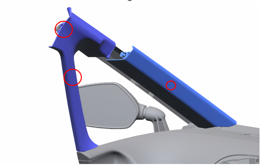
24.GARNISH SUB-ASSY, FR PILLAR, NO.1 LHおよびGARNISH SUB-ASSY, FR PILLAR, NO.2 LH取り外し
-
GARNISH SUB-ASSY, FR PILLAR, NO.1 LHを取り外す
-
GARNISH SUB-ASSY, FR PILLAR, NO.2 LHを取り外す
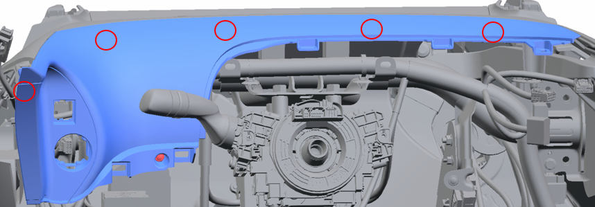
25.PANEL SUB-ASSY, INST CLUSTER UPR, No.1取り外し
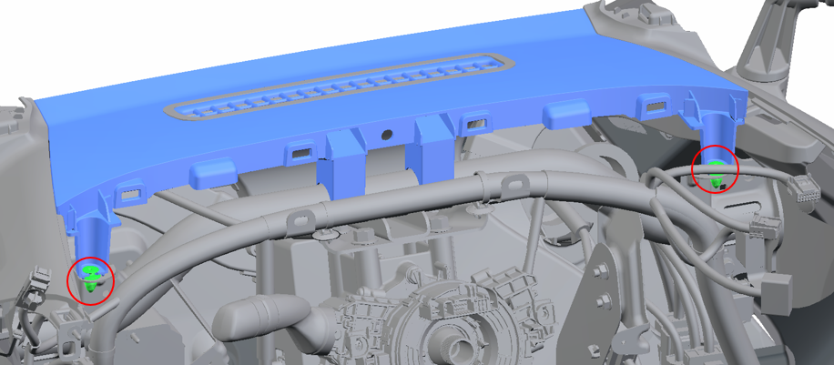
26.PANEL SUB-ASSY, INSTRUMENT, UPR取り外し
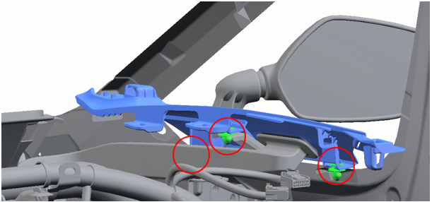
27.PANEL SUB-ASSY, INSTRUMENT UPR, RH取り外し
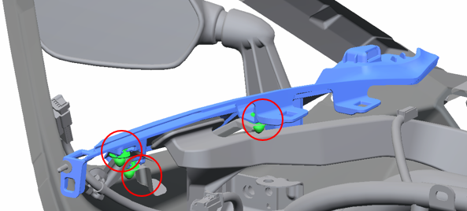
28.PANEL SUB-ASSY, INSTRUMENT UPR, LH取り外し
29.PANEL SUB-ASSY, INSTRUMENT UPR, LH取り外し
取り付け手順
取り外しと逆の手順で取りつける。
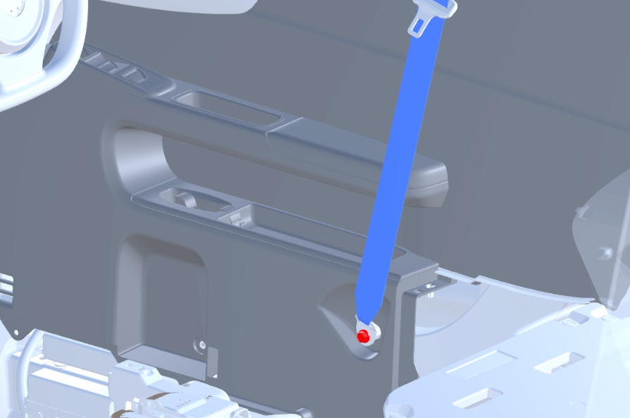
1.BELT ASSY, FR SEAT LAP OUTER, RH取り付け
-
BOX SUB-ASSY, SIDE CONSOLE, RHを取り付ける。
-
BELT ASSY, FR SEAT LAP OUTER, RHを取り付ける。
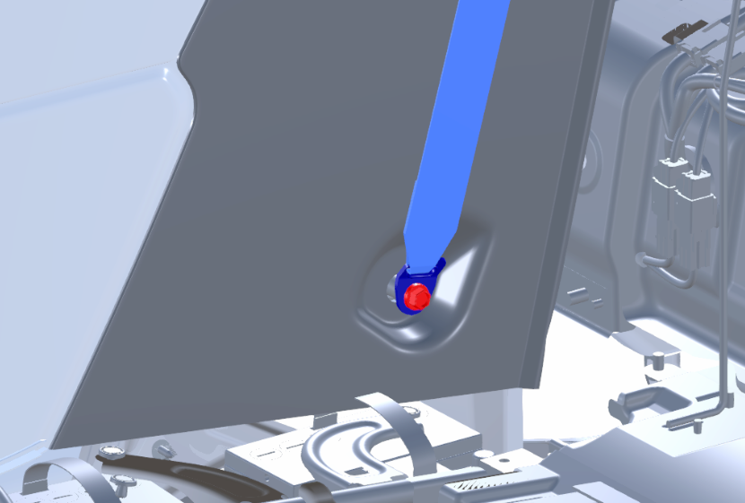
2.BELT ASSY, RR SEAT LAP OUTER, RH取り付け
-
TRIM SUB-ASSY, QUARTER, RHを取り付ける。
-
BELT ASSY, RR SEAT LAP OUTER, RHを取り付ける。
3.WHEEL ASSY, STEERING取り付け
-
合いマークを合わせてWHEEL ASSY, STEERINGを取り付ける。
-
ボルトを取り付ける。
4.PAD ASSY, STEERING WHEEL取り付け
-
ホーンボタンのワイヤーハーネスを接続する。
-
ボルト２本でホーンボタンを取り付ける。